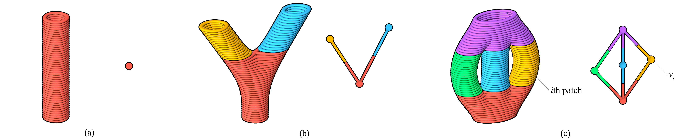
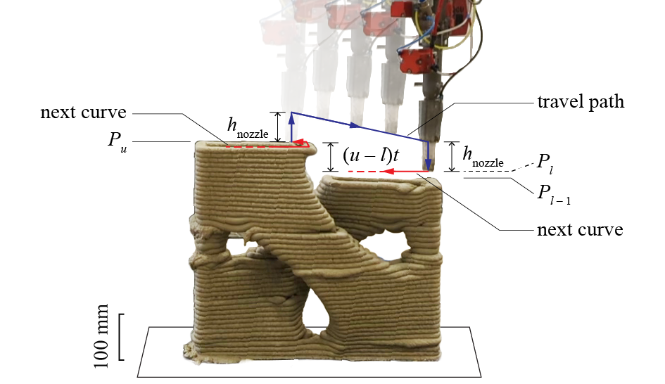
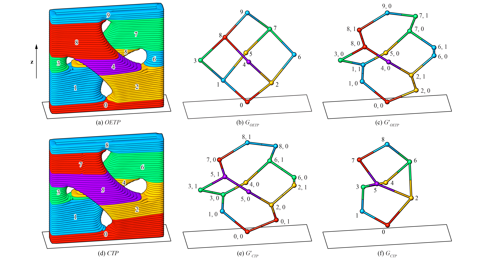
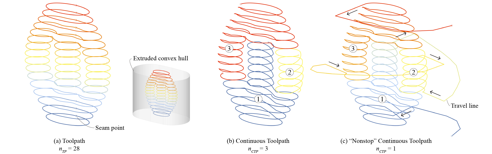

Continuous printing
Terminology
-
In Ovenbird, a

Continuous Toolpathis an alternative printing scheme aside the original
Toolpathand is the output of
Continuous Printing. By creates ramp curves across adjacent layers of the Toolpath, the Continuous Toolpath is an as-continuous-as-possible printing scheme. However, it is not necessarily globally continuous. Extrusion-based 3D printing favors such continuous toolpaths to minimize the seam defects and stringing issues caused by frequent stops-and-starts and save time and material. -
We use "nonstop" as a synonym of "globally continuous". Most paste extruding systems for materials like concrete, clay, hydrogels, etc. are incapable of stopping and restarting the extrusion while printing with clean ends. In these cases, a nonstop continuous toolpath is desired. In the last part we show that by adding minimal travel lines,

Nonstop Printingmakes a Continuous Toolpathnonstop.
| Printing scheme | Primary sources | Printer extrusion ability |
|---|---|---|
Toolpath |
Slice,  Wrap Toolpath |
Stop-and-starts required |
Continuous Toolpath |
Continuous Printing |
Stop-and-starts required if \(n_{CTP} > 1\) |
Nonstop Continuous Toolpath |
Nonstop Printing |
Stop-and-starts not required since \(n_{CTP} = 1\) |
Types of printing schemes
Topology analysis
The number of continuous curves in a Continuous Toolpath, or \(n_{CTP}\), is largely dependent on the vertical topology of the Toolpath.
Toolpath Topology analyzes the vertical topology by identifying one-extrusion patches. An one-extrusion patch is similar to a cylinder, where each curve is solely supported by the previous one. Each one-extrusion patch can be printed with one continuous curve, assuming collision-free. The dependency graph shows how upper patches are supported by lower patches. It is a directed acyclic graph (DAG) from bottom to top.
(1)
-
Example File
4. Topology and Continuous Printing → (1) Topology Analysis

Toolpath topology types, showing one-extrusion-patches and dependency graphs \(G_{OETP}\) (1): (a) monolithic; (b) branching; (c) porous (2)
- A Toolpath is called a One-Extrusion Toolpath (OETP) if it is rendered as one-extrusion patches.
- Image adapted from: Y. Zhi, H. Chai, T. Teng, and M. Akbarzadeh, “Automated toolpath design of 3D concrete printing structural components,” Additive Manufacturing, p. 104662, 2025.
To reduce the number of continuous curves needed, we favor a simpler topology. At the layer-level, we recommend simplify and merge regions to reduce the number of curves per layer before Continuous Printing.
Continuous printing
To avoid collision between the nozzle and the printed part, we might need to subdivide the one-extrusion patches. At the same time, the subdivided one-extrusion patches are sorted into a printable sequence. Continuous Printing subdivides and plans sequantially in the following way to avoid collision:
-
The nozzle is seen as a cylinder with a height \(h_\mathrm{nozzle}\). Only this part of the extruder is allowed to go below the highest point of the printed part. Equivalently, the maximal height difference between the highest printed layer and the lowest unprinted layer should not exceed \(h_\mathrm{nozzle}\). We may assume by fulfilling the criterion of \(h_\mathrm{nozzle}\), the Continuous Toolpath is made collision-free. (1)
-
Optionally, if a clearance is given,
Continuous Printingchecks the collision between pairs of curves and to fully ensures that the Continuous Toolpath is collision-free. This takes a longer time than relying solely on the noozle height constraint.
- Due to the overhang constraint, the adjacent layers do not change drastically.

Continuous printing under the nozzle height \(h_\mathrm{nozzle}\) constraint. (1)
- Image adapted from: Y. Zhi, H. Chai, T. Teng, and M. Akbarzadeh, “Automated toolpath design of 3D concrete printing structural components,” Additive Manufacturing, p. 104662, 2025.
The full subdividing and planning algorithm is available in our paper Automated toolpath design of 3D concrete printing structural components. (1)
- Y. Zhi, H. Chai, T. Teng, and M. Akbarzadeh, “Automated toolpath design of 3D concrete printing structural components,” Additive Manufacturing, p. 104662, 2025.

The effect of \(h_\mathrm{nozzle}\) in solving the Continuous Toolpath
Example Files
4. Topology and Continuous Printing → (2) Topology and Continuous Printing
4. Topology and Continuous Printing → (3) Configuring Continuous Printing
Graph-based view of continuous printing
In the right click menu of Continuous Printing, you can find four ways of displaying the Continuous Toolpath, each with an associated dephendency graph. According to the solving order, they are:
- One-Extrusion Toolpath (OETP). The direct result of topology analysis. The graph \(G_{OETP}\) shows the relations between one-extrusion patches.
- Subdivided One-Extrusion Toolpath. Vertices of \(G_{OETP}\) are subdivided to form \(G'_{OETP}\) such that they can be printed without collisions. The vertices of \(G'_{OETP}\) that come from the same one-extrusion patch also have the same color.
- Subdivided Continuous Toolpath. Vertices of \(G'_{OETP}\) are sorted and recolored to form \(G'_{CTP}\). If adjacent vertices from different one-extrusion patches can be printed as one curve, they now share the same color.
- Continuous Toolpath (CTP). The adjacent vertices in \(G'_{CTP}\) sharing the same color are now joined to form \(G_{CTP}\)
The thickened shapes of the four graphs are homeomorphic.

Types of dependency graphs. One-Extrusion Toolpath and Continuous Toolpath visualized with color coding. (1)
- Image adapted from: Y. Zhi, H. Chai, T. Teng, and M. Akbarzadeh, “Automated toolpath design of 3D concrete printing structural components,” Additive Manufacturing, p. 104662, 2025.
Nonstop printing
Nonstop Printing further prepares the Continuous Toolpath for extruding systems that can not stop and start. (1)
-
Example File
1. Introduction → (4) Minimal Working Example, Nonstop
To minimize the amount of material that falls on the printed body, Nonstop Printing places the travel lines around the main body.
Firstly, the seam points of the Toolpath should placed using 
Align Seams (see Align seams) to be closest to the object's "boudary", or the extruded convex hull, which is a cylindrical extrusion that wraps the geometry with a designated clearance. As a result, the starts and ends of the Continuous Toolpath are also close to the boundary. Finally, a travel line between two continuous curves is formed by projecting the end points onto the extruded convex hull and linking them using a long ramp. When the nozzle extrudes in the air, the extrudate will fall on the ground, with minimal contact with the printed body.

From Toolpath to an as-continuous-as-possible Continuous Toolpath and a globally continuous Continuous Toolpath
Animation of the nonstop Continuous Toolpath